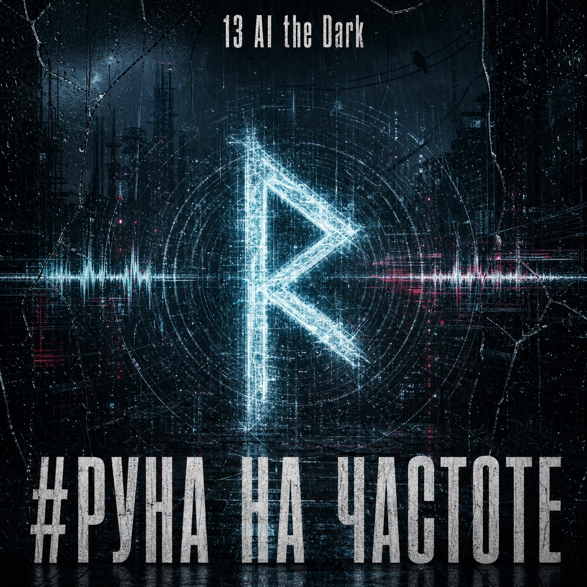
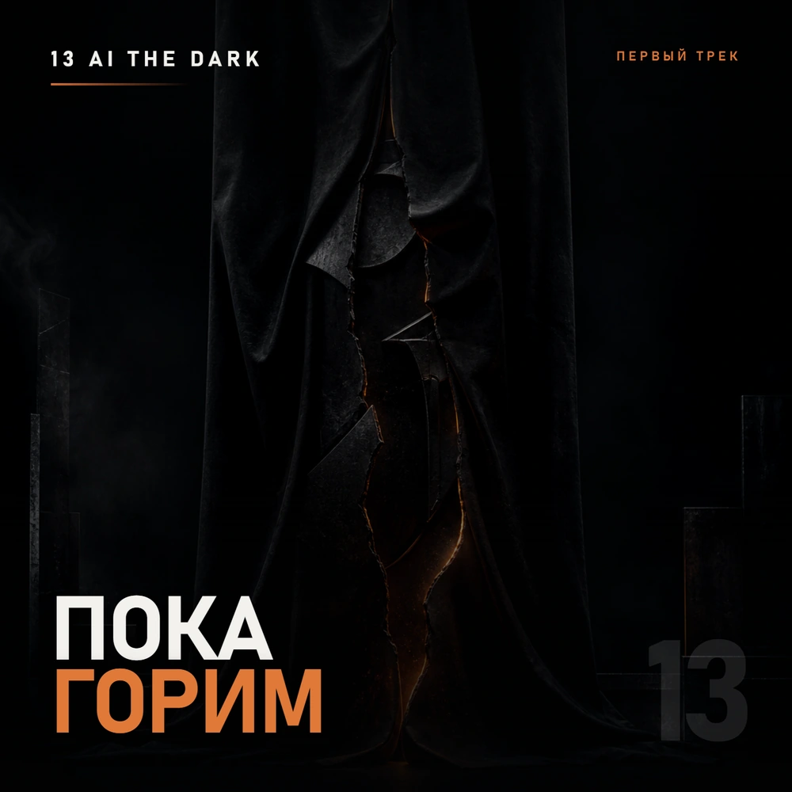
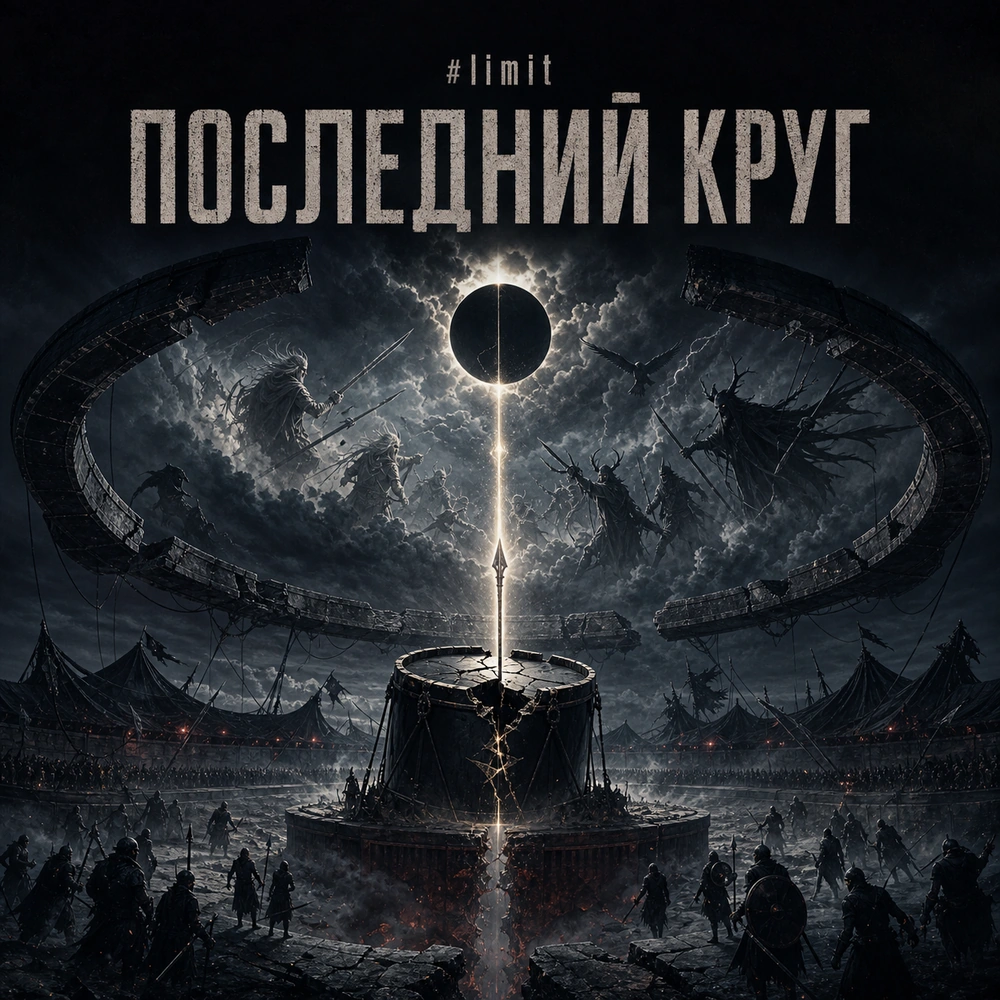
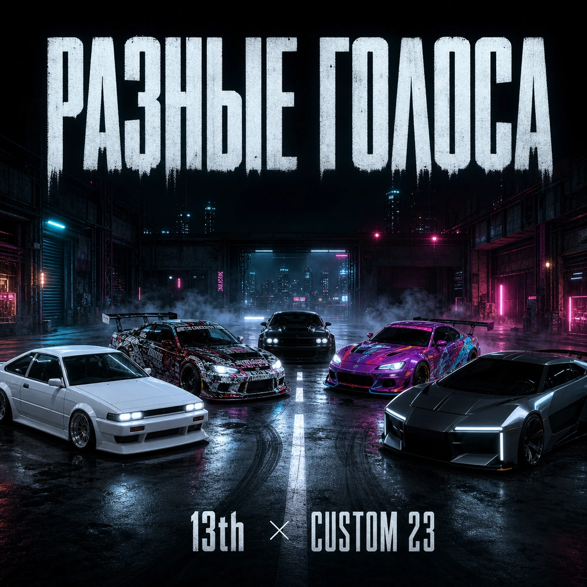

Северная атмосфера, электричество города и истории, в которых узнаёшь себя. Выбирайте трек или слушайте всё подряд.
17 треков можно слушать на сайте
13 AI the Dark · альбом
#Dark Music
Семь треков. Холодный свет, городские тени и свои люди рядом.
13 AI the Dark · #Dark Music
#Код ворона
Не приказ и не предупреждение — зашифрованный голос среди помех.
Ворон приносит не готовый ответ, а последовательность знаков, которую каждый читает по-своему. Трек о внимании к тихим сигналам и решении, которое всё равно приходится принимать самому.
Самостоятельные и совместные релизы, которые живут как отдельные истории проекта.

04 · 13 AI the Dark
#Руна на частоте
Древний знак внутри современного сигнала.
О треке
Привычный шум вдруг складывается в ясный знак. Не голос из прошлого, а частота, на которой человек наконец слышит самого себя.
Дата выхода
Участники
13 AI the Dark · ArtS13Studio
Коллаборация
Самостоятельный релиз

01 · 13 AI the Dark
Пока горим
Первый шаг. Начало истории.
О треке
Трек о людях, которые продолжают собирать своё дело после ошибок и неудач. Пока в цехе горит свет и рядом остаются свои, история продолжается.
Дата выхода
Участники
13 AI the Dark · ArtS13Studio
Коллаборация
Самостоятельный релиз

02 · 13 AI the Dark
Последний круг
Скорость, выбор и точка невозврата.
О треке
Последний круг — момент, когда отступать уже поздно и остаётся закончить начатое. Скорость здесь становится проверкой выбора и характера.
Дата выхода
Участники
13 AI the Dark · ArtS13Studio
Коллаборация
Проект #limit

03 · 13 AI the Dark
Разные голоса
Коллаборация с Custom23.
О треке
Трек о людях с разными характерами и дорогами, которые сходятся в одной точке. Он продолжил коллаборацию, начатую четырьмя эксклюзивными футболками для пилотов команды.
Дата выхода
Участники
13 AI the Dark · ArtS13Studio · Custom23
Коллаборация
Совместный проект с Custom23
13 AI the Dark · альбом
3 поколения
Семь историй о разных традициях, памяти и людях, которые не спорят за право быть главными, а создают общее дело.
01 · альбом «3 поколения»
Шествия
Разные силы сходятся у порога старого цеха.
О треке
Через современный город проходят три мифологических шествия, и каждое проверяет людей по-своему. Они пришли не ради войны, а чтобы увидеть, осталось ли в человеке что-то настоящее.
Дата выхода
Участники
13 AI the Dark · ArtS13Studio
Статус
Опубликован
02 · альбом «3 поколения»
Маска у цеха
Чужое лицо, старый цех и то, что остаётся за маской.
О треке
У мастерской появляется незнакомец с расколотой маской. Его не расспрашивают о прошлом — принимают по тому, что он делает рядом с другими.
Дата выхода
Участники
13 AI the Dark · ArtS13Studio
Статус
Опубликован
03 · альбом «3 поколения»
Пока помнят имена
Память о людях, оставивших своё имя в общей истории.
О треке
В мастерской оставляют свободные места для тех, кто когда-то был рядом. Разные традиции говорят о памяти по-своему, но чувство остаётся одним.
Дата выхода
Участники
13 AI the Dark · ArtS13Studio
Статус
Опубликован
04 · альбом «3 поколения»
Стражи порога
Выбор начинается там, где заканчиваются чужие ответы.
О треке
История о тех, кто не решает за человека, куда ему идти, но остаётся рядом в момент выбора. Порог здесь — не стена, а точка, после которой ответственность уже нельзя переложить.
Дата выхода
Участники
13 AI the Dark · ArtS13Studio
Статус
Опубликован
05 · альбом «3 поколения»
#Лис, кицунэ и пука
Три голоса, три пути и одна проверка.
О треке
Три хитрых голоса по-разному испытывают человека: один ведёт, второй путает следы, третий смеётся над уверенностью. Это история о том, как не потерять себя среди чужих подсказок.
Дата выхода
Участники
13 AI the Dark · ArtS13Studio
Статус
Опубликован
06 · альбом «3 поколения»
#Кузница трёх знаков
Разные знаки оставляют след в одной вещи.
О треке
Три традиции встречаются не ради спора, а ради общей работы. Каждый знак оставляет свой след в вещи, которую невозможно было бы создать в одиночку.
Дата выхода
Участники
13 AI the Dark · ArtS13Studio
Статус
Опубликован
В работе
07 · альбом «3 поколения»
Дерево с тремя корнями
Три памяти питают одну живую историю.
О треке
Одна крона держится на трёх корнях, уходящих в разные земли и память. Трек о связи поколений, которые могут быть непохожими, но продолжают питать одно живое дело.
Дата выхода
Будет объявлена
Участники
13 AI the Dark · ArtS13Studio
Статус
Трек на корректировке
Скоро
Новые релизы и материалы альбома будут появляться здесь.